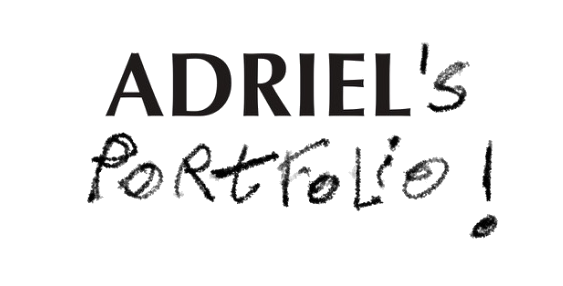

project overview
Mining Lifestyle and Psychological Factors Influencing Stress Levels
Analyzed lifestyle and psychological data to identify key stress predictors through a classification-driven data mining workflow.

project overview
Analyzed lifestyle and psychological data to identify key stress predictors through a classification-driven data mining workflow.